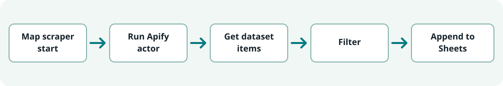
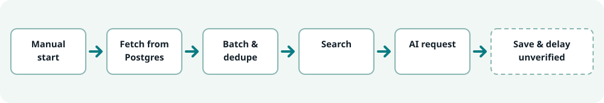
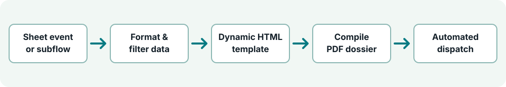

Multi-stage orchestration architectures built in n8n, connecting automated web scraping actors, relational databases, AI enrichment prompts, and document compilation services.
Curated Canvas Evidence
Looking for All 8 Documented Workflow Systems?
In addition to the 3 featured primary pipelines below, inspect our complete dedicated gallery featuring 12 original n8n canvas screenshots across 8 distinct automation families (configured pipelines & architectural blueprints).
Business Objective: Automate the extraction, sanitization, and structured storage of targeted business records from online map directories without manual copy-paste overhead.

Illustrative architecture diagram: Apify actor extraction, attribute filtering, and automated Google Sheets row insertion.
1. Trigger
Maps Scraper initiation node starts the scheduled or manual extraction run.
2. Extraction
Calls an Apify actor specialized in geographical business directory scraping.
3. Ingestion
Retrieves returned dataset items containing business name, address, contact coordinates, and category metadata.
4. Transformation
Executes regex validation and attribute filtering to remove incomplete or duplicate entries.
5. Persistence
Google Sheets node appends clean records into structured operational spreadsheets.
Evidence Status: Configured n8n workflow architecture demonstrating node structure, data transformations, and Google Sheets field mapping.
Company Research & AI Enrichment Engine
02 / Data Enrichment & LLM Processing
Configured ETL Blueprint
High-Volume PostgreSQL & AI Research Pipeline
Business Objective: Enrich high-volume company databases with verified business intelligence, executive contacts, and domain classification using external search and AI reasoning.

Illustrative architecture diagram: Relational database fetching, batch chunking, search queries with fallbacks, and AI enrichment loops.
1. Data Retrieval
Queries candidate company rows from a PostgreSQL database table staging input records.
2. Batching & Dedup
Splits large datasets into manageable batches (e.g., 30 records/batch) and executes deduplication checks against existing indices.
3. Search Query
Dispatches search queries to identify official company domains and public profiles, with built-in SerpApi fallback routing.
4. AI Synthesis
Sends structured prompts to an LLM API to extract key industry tags, company size, and executive summaries.
5. Storage Loop
Prepares enriched attributes for batch updates back into the relational database.
Business Objective: Transform raw tabular lead rows into polished executive briefings and downloadable PDF dossiers for commercial sales teams.

Illustrative architecture diagram: Event-driven document generation converting spreadsheet rows into compiled PDF reports.
1. Event Trigger
Monitors Google Sheets for newly approved lead status rows or subworkflow execution signals.
2. Template Population
Maps lead attributes into dynamic HTML document templates with custom styling and branding.
3. PDF Compilation
Routes compiled HTML through a document-rendering service to generate standardized PDF files.
4. Notification & Dispatch
Dispatches the generated PDF to team members via automated email notifications.
Explore All 8 Automation Workflow Families
Beyond the 3 primary pipelines detailed above, my work at Advfiction encompassed 5 additional automation systems including Instagram Graph API publishing, Telegram bot approval interfaces, AI news aggregation, automated image generation pipelines, and modular subworkflow routing: